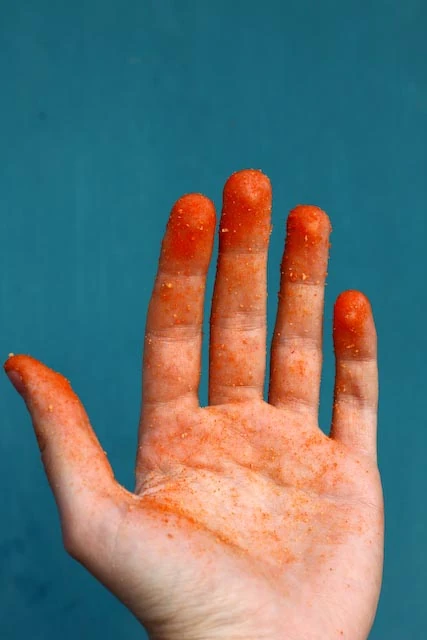
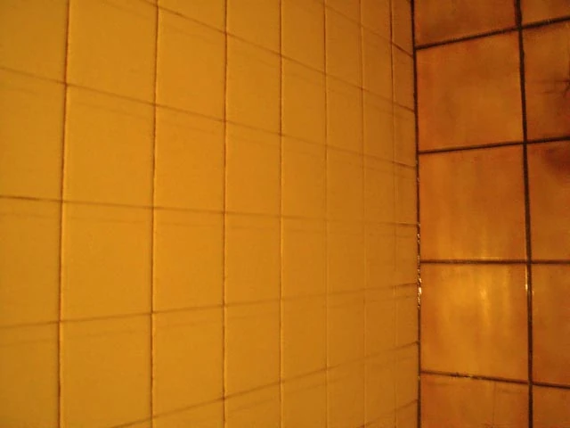

CF—PH—005 / 2010
Everyday
Small things, noticed.
An orange-dusted hand, a yellow tiled corner, and two cardboard paths that end at brick walls.






CF—PH—005 / 2010
Small things, noticed.
An orange-dusted hand, a yellow tiled corner, and two cardboard paths that end at brick walls.

